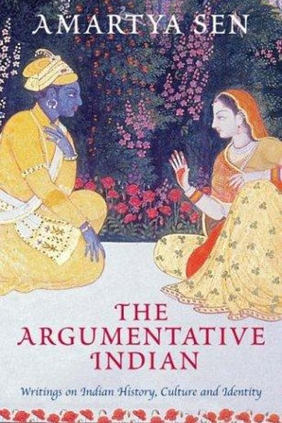

Library › Psychology & People
The Argumentative Indian — Summary & Key Lessons

Debate is India's oldest and best tradition.
📖 OPEN THE FULL INTERACTIVE BREAKDOWN →🌐 Read it in Hindi, Hinglish, Gujarati, Tamil & 22 more languages — free, with audio.
💡 The Big Idea
Nobel laureate Amartya Sen's landmark essay collection argues that India's greatest tradition is not mysticism or obedience but argument — a continuous, public, often noisy debate that has shaped Indian identity for millennia. From the Buddha's questioning to Ashoka's tolerance, from the syncretic courts of Akbar to the debates of modern democracy, Sen shows that the 'argumentative Indian' — the person who insists on reasons, who disputes received wisdom, who celebrates heterodoxy — is India's true heritage. The book is both a history of Indian public reasoning and a defence of it: the nation that argues is the nation that stays free, democratic and innovative.
🧠 The 6 Key Lessons
Lesson 1: The Argumentative Tradition: Debate Is India's Oldest Export
Part 1: The Heritage
Sen opens with a correction to the stereotype of India as a land of mystics and unquestioning faith: India's intellectual history is a long, loud argument. The Buddha questioned everything; the Upanishads record disputations; Buddhist councils debated doctrine; Akbar hosted multi-faith dialogues; even the epics are structured around competing viewpoints. Sen's point: argument is not a modern, Western import — it is the native Indian intellectual style. The lesson: the culture that argues stays alive. The same applies to teams, families and minds — the willingness to dispute, respectfully, is a sign of health, not disrespect.
📖 Example: Sen cites the Buddhist councils — centuries before European universities — where doctrine was settled by open debate, and Akbar's court where Hindus, Muslims, Christians and Jains argued theology. The pattern is ancient and indigenous. Read the full example →
⚡ Do this: Revive argument in your circle: start one respectful debate this week on a topic you actually care about — and genuinely listen to the other side's best points.
Lesson 2: Heterodoxy and Tolerance: The Strength of Many Voices
Part 2: The Culture
Sen argues that Indian tolerance is not indifference — it is the practical wisdom that comes from heterodoxy: when many beliefs have always coexisted, no single one can claim monopoly. The same pluralism that allowed Jain, Buddhist and Hindu traditions to flourish side by side, and later welcomed Islam and Christianity, is a governance asset: a society used to difference is a society that can negotiate difference. The lesson: diversity is not a problem to be managed but a strength to be organized. The team, company or nation that can hold many perspectives without collapsing has a structural advantage over the one that demands uniformity.
📖 Example: Sen shows how India's tradition of heterodoxy made democracy viable — a population accustomed to divergent beliefs could accept the legitimacy of opposing political views, the essential precondition of democratic politics. Read the full example →
⚡ Do this: Deliberately include one perspective you usually exclude — in your reading, your team, your feed. Engage with it seriously for a week and note what it changes.
Lesson 3: Reasoning Over Identity: The Person, Not the Label
Part 3: The Identity
One of Sen's most famous arguments: every person has multiple identities — nationality, religion, profession, family, region, values — and reducing anyone to a single label is both a cognitive error and a political weapon. The 'identity politics' that says 'you are only your religion' (or your caste, or your party) is a form of imprisonment; the argumentative Indian insists on the freedom to reason across identities. The lesson: never let anyone define you by one label, and never define others that way. The person who can move between their identities has more options, more empathy and more freedom than the one locked into a single box.
📖 Example: Sen illustrates with his own life: born in India, educated in England and America, Hindu by family, secular by conviction — no single label captures him, and the attempt to force one is precisely the error he warns against. Read the full example →
⚡ Do this: List your 5 identities (profession, family, culture, values, interests). For each, write one thing the others don't capture about you — and use that awareness before judging someone by one label.
Lesson 4: The Secular Case: Public Reasoning Builds the Common Good
Part 4: The Politics
Sen's defence of secularism is not anti-religion but pro-reason: a secular state is one where public decisions are made through argument open to all citizens, not through the dictates of any particular faith. He argues that India's secularism — unlike the Western separation model — means equal respect for all religions, which requires exactly the argumentative culture he celebrates. The lesson: the institutions that serve everyone are built by reasoning that includes everyone. In any organization, decisions reached through open, inclusive argument have more legitimacy and better quality than decisions handed down — and the leader who can explain reasons wins commitment that commands cannot buy.
📖 Example: Sen points to how Indian secularism survived — against predictions — because a society accustomed to argument could accommodate religious plurality within a common civic framework. The debate was the glue. Read the full example →
⚡ Do this: For your next significant decision, write out the reasoning publicly (to your team or family) — the full 'why' including the trade-offs. Invite challenge. Note how commitment changes.
Lesson 5: The Poverty of the Imagination: Scarcity Is Also a Failure of Ideas
Part 5: The Economics
Sen's economics chapters argue that poverty is not just low income — it is the deprivation of capabilities: the ability to be educated, healthy, employed, respected and heard. India's failures, in this view, are as much failures of imagination and argument as of resources: the ideas that excluded the poor from schooling, women from work, and the lower castes from opportunity were ideas that argument could — and eventually did — overturn. The lesson: the most binding scarcity is often conceptual. Before accepting 'there's no way', ask whose assumptions created the constraint. Many 'hard limits' are arguments waiting to be lost.
📖 Example: Sen's famous work on famine showed that famines are not caused by food scarcity alone but by failures of distribution and information — a scarcity of argument about who gets the food. The fix was as much democratic accountability as grain. Read the full example →
⚡ Do this: Identify one 'scarcity' you accept as fixed (time, money, opportunity). Ask: whose rules create this limit? Write one argument that could change the distribution, and make it to one person.
Lesson 6: The Global Conversation: India as the World's Argumentative Partner
Part 6: The World
Sen ends by placing India in the global conversation: a nation whose argumentative tradition makes it a natural participant — and leader — in worldwide debates about justice, development and democracy. He rejects both nationalistic chauvinism and self-hating cosmopolitanism: India's gift to the world is not a doctrine but a habit — the habit of questioning, comparing and reasoning across boundaries. The lesson for the individual: your greatest export is your ability to think — not your opinions, but your method. The person who reasons well, listens well and argues honestly is valuable in any room, any market, any century.
📖 Example: Sen himself is the living example — an Indian economist whose arguments about famine, development and justice reshaped global policy, precisely because his reasoning travelled beyond national boundaries. Read the full example →
⚡ Do this: Take one argument you've been having only with yourself (or like-minded people) and bring it into a genuinely different room — someone of a different generation, background or politics. Argue well, listen better.
✅ 5-Step Action Plan
- Start one respectful debate this week and genuinely hear the other side.
- Include one perspective you usually exclude — for a full week.
- Write your 5 identities and resist being reduced to one label.
- Publish the reasoning behind one decision and invite challenge.
- Take one argument into a genuinely different room and argue it well.
⚠️ When This Doesn't Work
Sen's 'India's genius is its tradition of argument' is the most important Indian intellectual history ever — and Excite is the warning that argument requires a listener: the search engine that could have bought Google for $1 million passed because its leaders refused to seriously engage the argument that 'search is the future' — they were reasonable, rational, and catastrophically wrong. Sen's book celebrates India's argumentative tradition; the caveat is that argumentation is only valuable when it can change minds — and the strongest argument loses when the decision-maker has decided. India's genius for debate has a twin: India's genius for ignoring the debate. Keep arguing; also keep listening.
💀 The Graveyard Proves It
🔎 Excite — Passed on Google for $750,000. Burn: The most valuable 'no' in history. Read the full case study →
💬 Best Quotes from The Argumentative Indian
- “Argument is India's oldest tradition — the Buddha questioned everything.”
- “Every person is many identities; never let anyone reduce you to one.”
- “Poverty is also a failure of imagination — many limits are arguments waiting to be lost.”
Interactive version: mark lessons as read, listen in your language, share quote cards.